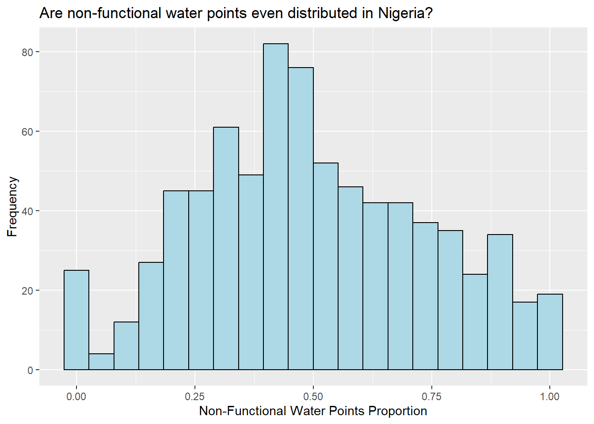

pacman::p_load(sf,tidyverse,tmap,spdep,funModeling,knitr)Inclass Exercise 2
Geospatial Analysis for water points in Nigeria
Background of the analysis
Water is the source of life on the Earth. Clean and accessible water is particularly critical for human life. Yet over 40% of the global population does not have access to sufficient clean water. Scarcity of water supply is a intractable problem to be solved in the world.
Objectives
The main aim of this project is to use water point related data from rural areas at the water point or small water scheme level and share the data via WPdx Data Repository. In order to address this complex problem, we focus on Nigeria as a study case and analyse the spatial distribution attributes of Not Functional Water Point in this project.
1. Data used
The data used in this project consists of two types:
aspatial data from WPdx Global Data Repositories
geospatial data of Nigeria Level-2 Administrative Boundary (also known as Local Government Area) polygon features GIS data.
2. Packages used
In this project, packages below are used to facilitate our analysis.
sf
tidyverse
tamp
spdep
funModeling
knitr
3. Importing data into R environment
The data belonging to Nigeria should be extracted from the shapefiles geo_export. We use Projected Coordinate System whose identifier of EPSG is 26391, so the crs = 26391. The function st_read of sf package is used to save the data in a simple feature data table. The data has been filtered when downloaded so no filter by Nigeria will be used here.
wp <- st_read(dsn = "geodata",
layer = "geo_export",
crs = 26391)From the description above,
the data has 95008 features and 72 fields
Geometry type is POINT
Coordinate system is Projected System Minna/Nigeria west Belt
Then we upload the extracted tidy data table into the data file geodata.
write_rds(wp,"geodata/wp_nga.rds")Now we import Nigeria LGA boundary data into R environment using the same function, and also extract Projected Coordinate System to match the water point data.
nga <- st_read(dsn = "geodata",
layer = "geoBoundaries-NGA-ADM2",
crs = 26391)From the description above,
Geometry type of the data is MULTIPOLYGON
Coordinate system is Projected System Minna/Nigeria west Belt
4. Data Wrangling
4.1 Data Issues
4,1,1 Missing Value Check
First let us check if there are missing values in the extracted data tables.
summary(nga[rowSums(is.na(nga))!=0,])As we can see the summary information above, there is no missing value in LGA boundary data.
summary(wp[rowSums(is.na(wp))!=0,])As we can see from information above, there are so many missing values in the water point data. For example, there are 94994 missing values in clean_adm4, 46891 missing values in install_ye, and so on.
4.1.2 Recoding Missing Values into Strings
Next, we recode these missing values of status_cle, which we will use in the subsequent analysis into “Unknown” to proceed our analysis.
wp_nga <- read_rds("geodata/wp_nga.rds") %>%
mutate(status_cle = replace_na(status_cle, "Unknown"))4.2 Data Processing
4.2.1 Glimpse The Data Tables
We take a check at our data tables with glimpse() of dplyr package.
glimpse(nga)We can see that the table has 774 rows and 6 columns, which are in character and multipolygon classes.
shapename
Level
shapeID
shapeGroup
shapeType
geometry.
glimpse(wp_nga)
We can see that the table has 95008 rows and 73 columns.
Then let us have a quick look at the geometry of the geospatioal data by using plot() and st_geometry() of sf package.
plot(st_geometry(nga))4.2.2 Distribution of The Data in status_cle Field
Then we can display the distribution of the data in status_cle field using freq().
freq(data=wp_nga,
input = 'status_cle')From the hist graph, it is shown that Functional Water Point takes the most portion of 48.29 % within the status_cle field. Next is Non-Functional Water Point, our objective analysed in this project, which takes 30.93% in the field.
4.2.3 Points in Polygons
We first extract Functional water point, on which we focus to analyse, from the whole status_cle field, and write the simple feature data table into rds files.
wpt_functional <- wp_nga %>%
filter(status_cle %in%
c("Functional",
"Functional but needs repair",
"Functional but not in use"))
write_rds(wpt_functional,"geodata/wpt_functional.rds")We can check the proportion of each attribute in Functional Water Point as shown below.
freq(data=wpt_functional,
input = 'status_cle')We then extract Non-Functional water point from the whole status_cle field, and write the simple feature data table into rds files.
wpt_nonfunctional <- wp_nga %>%
filter(status_cle %in%
c("Abandoned/Decommissioned",
"Abandoned",
"Non-Functional",
"Non functional due to dry season",
"Non-Functional due to dry season"))
write_rds(wpt_nonfunctional,"geodata/wpt_nonfunctional.rds")We can check the proportion of each attribute in Non-Functional Water Point as shown below.
freq(data=wpt_nonfunctional,
input = 'status_cle')Now we count the number of Total, Functional and Non-Functional water points at LGA level using st_intersects().
FC<- lengths(st_intersects(nga, wpt_nonfunctional))
NFC<- lengths(st_intersects(nga, wpt_functional))
TL<-lengths(st_intersects(nga, wp_nga))We merge the count of Total Water Point, Functional Water Point and Non-Functional Water Point in polygons with LGA data table nga as nga_wp.
nga_wp <- nga %>%
mutate(`total wpt` = TL) %>%
mutate(`wpt functional` = FC) %>%
mutate(`wpt non-functional` = NFC)Then we calculate the portion of numbers of functional and non-functional water points in each polygon, and merge it with nga data table.
nga_wp <- nga_wp %>%
mutate(pct_functional = `wpt functional`/`total wpt`) %>%
mutate(`pct_non-functional` = `wpt non-functional`/`total wpt`)Now we save the data table into rds format with the chunk below. And delete other raw data.
write_rds(nga_wp, "geodata/nga_wp.rds")5. Geospatial Analysis
5.1 Visualizing Water Point Indicator
Now we can visualize the distributions of proportions of Functional and Non-Functional water point using ggplot2 package.
nga_wp <- read_rds("geodata/nga_wp.rds")
ggplot(data=nga_wp,
aes(x= as.numeric(`pct_non-functional`)))+
geom_histogram(bins=20,
color="black",
fill="light blue") +
labs(title = "Are non-functional water points even distributed in Nigeria?",
subtitle= "There are many planning sub-zones with a single pre-school, on the other hand, \nthere are two planning sub-zones with at least 20 pre-schools",
x = "Non-Functional Water points proportion",
y = "Frequency")
We can see that
Spatial distribution of Non-Functional water points across the nation is visualized as below.
wpt_nonfunctional<-read_rds("geodata/wpt_nonfunctional.rds")
tmap_mode("plot")
tm_shape(st_geometry(nga_wp)) +
tm_borders(alpha = 0.5) +
tmap_options(check.and.fix = TRUE) +
tm_shape(wpt_nonfunctional) +
tm_dots(col="red", size=0.05) +
tm_layout(main.title = "Non-Functional Water Point",
main.title.position = "center",
main.title.size = 1.2,
frame = TRUE)Now, we are going to prepare a basemap and a choropleth map showing the distribution of Non-Functional water point by using qtm() of tmap package.
equal <- tm_shape(nga_wp) +
tm_fill("wpt non-functional",
n = 5,
style = "equal") +
tm_borders(alpha = 0.5) +
tm_layout(main.title = "Equal interval classification",
legend.outside = TRUE,
legend.height = 0.45,
legend.width = 5.0,
legend.position = c("right", "bottom"),
frame = FALSE)
quantile <- tm_shape(nga_wp) +
tm_fill("wpt non-functional",
n = 5,
style = "quantile") +
tm_borders(alpha = 0.5) +
tm_layout(main.title = "Equal quantile classification",
legend.outside = TRUE,
legend.height = 0.45,
legend.width = 5.0,
legend.position = c("right", "bottom"),
frame = FALSE)
tmap_arrange(equal,
quantile,
asp=1,
ncol=2)
6 Global Spatial Autocorrelation
Before we can compute the global spatial autocorrelation statistics, we need to construct a spatial weights of the study area. Because we have had a quick look that the study area has no isolate districts from the geometry map, there’s no reason to drop Contiguity Spatial Weights or Distance Spatial Weights. So we can use both method and compare the results at last.
6.1 Computing Contiguity Based Neighbours
6.1.1Computing (QUEEN) contiguity based neighbours
The code chunk below is to compute neigbours using Queen’s Case.
wm_q <- poly2nb(nga_wp, queen=TRUE)
summary(wm_q)Neighbour list object:
Number of regions: 774
Number of nonzero links: 4440
Percentage nonzero weights: 0.7411414
Average number of links: 5.736434
1 region with no links:
86
Link number distribution:
0 1 2 3 4 5 6 7 8 9 10 11 12 14
1 2 14 57 125 182 140 122 72 41 12 4 1 1
2 least connected regions:
138 560 with 1 link
1 most connected region:
508 with 14 linksThe summary report above shows that there are 774 area units in Nigeria. The most connected area unit 508 has 14 neighbours. There are two area units with only one heighbours.
Let us see the complete nearest neighbors of each polygon by using str() as shown below.
str(wm_q)List of 774
$ : int [1:4] 2 548 624 721
$ : int [1:3] 1 624 721
$ : int [1:3] 261 447 507
$ : int [1:7] 257 263 436 446 454 466 709
$ : int [1:5] 203 208 331 617 738
$ : int [1:7] 170 217 218 337 379 553 758
$ : int [1:6] 8 176 214 281 349 555
$ : int [1:4] 7 214 544 555
$ : int [1:5] 18 104 337 601 757
$ : int [1:7] 25 216 325 364 365 528 632
$ : int [1:7] 26 27 43 157 191 524 565
$ : int [1:8] 135 263 417 446 520 690 695 709
$ : int [1:5] 31 37 471 583 584
$ : int [1:8] 170 362 363 546 577 581 589 626
$ : int [1:7] 49 82 177 297 306 352 580
$ : int [1:5] 30 187 328 357 360
$ : int [1:3] 35 638 639
$ : int [1:5] 9 19 104 576 601
$ : int [1:6] 18 103 104 376 574 576
$ : int [1:5] 419 466 471 508 641
$ : int [1:5] 61 162 269 520 596
$ : int [1:3] 49 297 326
$ : int [1:5] 54 291 537 618 619
$ : int [1:4] 123 527 673 761
$ : int [1:7] 10 181 216 314 325 366 552
$ : int [1:4] 11 27 191 562
$ : int [1:5] 11 26 562 565 762
$ : int [1:7] 29 173 300 315 316 358 369
$ : int [1:7] 28 173 182 358 378 460 591
$ : int [1:8] 16 38 39 186 192 329 357 360
$ : int [1:6] 13 94 211 471 561 584
$ : int [1:3] 51 62 693
$ : int [1:6] 166 227 238 655 743 750
$ : int [1:7] 42 104 213 330 553 559 757
$ : int [1:7] 17 275 295 378 460 638 639
$ : int [1:8] 50 107 164 247 408 432 455 759
$ : int [1:11] 13 38 40 211 212 320 570 583 584 620 ...
$ : int [1:7] 30 37 39 40 41 192 320
$ : int [1:4] 30 38 186 320
$ : int [1:4] 37 38 41 620
$ : int [1:5] 38 40 192 620 634
$ : int [1:4] 34 136 137 559
$ : int [1:3] 11 157 524
$ : int [1:6] 45 290 303 328 360 634
$ : int [1:3] 44 290 303
$ : int [1:4] 438 521 668 742
$ : int [1:5] 166 234 238 698 750
$ : int [1:4] 113 265 386 701
$ : int [1:7] 15 22 51 297 326 580 623
$ : int [1:8] 36 98 107 409 416 432 681 696
$ : int [1:8] 32 49 62 207 461 580 623 693
$ : int [1:6] 53 78 80 165 602 636
$ : int [1:8] 52 80 199 280 602 621 622 739
$ : int [1:7] 23 79 293 294 532 537 618
$ : int [1:3] 122 430 605
$ : int [1:5] 77 376 533 576 728
$ : int [1:4] 58 199 322 621
$ : int [1:7] 57 322 323 522 523 621 622
$ : int [1:5] 88 128 493 700 714
$ : int [1:7] 61 158 561 578 592 596 626
$ : int [1:5] 21 60 269 596 626
$ : int [1:6] 32 51 207 461 462 693
$ : int [1:6] 90 237 384 416 467 765
$ : int [1:8] 65 74 109 113 131 148 251 407
$ : int [1:5] 64 74 113 265 701
$ : int [1:6] 103 104 288 351 559 574
$ : int [1:7] 304 348 511 594 609 640 694
$ : int [1:2] 157 191
$ : int [1:9] 115 140 146 248 273 274 473 500 512
$ : int [1:5] 71 301 341 343 610
$ : int [1:9] 70 173 298 299 301 343 344 550 625
$ : int [1:8] 73 361 594 607 609 638 639 665
$ : int [1:6] 72 361 374 377 665 666
$ : int [1:6] 64 65 109 683 701 754
$ : int [1:7] 272 398 422 433 485 501 768
$ : int [1:8] 254 287 427 459 547 647 677 751
$ : int [1:6] 56 533 534 579 716 728
$ : int [1:7] 52 79 80 165 215 532 579
$ : int [1:5] 54 78 532 579 618
$ : int [1:5] 52 53 78 215 739
$ : int [1:5] 99 145 233 426 689
$ : int [1:3] 15 352 580
$ : int [1:4] 132 258 383 414
$ : int [1:5] 123 148 437 673 692
$ : int [1:7] 105 156 394 654 675 707 712
$ : int 0
$ : int [1:6] 151 221 226 399 410 486
$ : int [1:6] 59 150 489 648 700 714
$ : int [1:7] 260 408 416 463 674 681 759
$ : int [1:9] 63 163 232 236 237 452 497 710 765
$ : int [1:4] 160 271 406 440
$ : int [1:6] 119 390 392 487 656 668
$ : int [1:6] 123 354 402 607 665 666
$ : int [1:8] 31 158 436 471 520 561 596 709
$ : int [1:6] 391 392 405 469 656 708
$ : int [1:7] 97 139 389 403 420 451 653
$ : int [1:5] 96 389 451 662 773
$ : int [1:5] 50 231 432 696 708
$ : int [1:5] 81 426 689 760 769
[list output truncated]
- attr(*, "class")= chr "nb"
- attr(*, "region.id")= chr [1:774] "1" "2" "3" "4" ...
- attr(*, "call")= language poly2nb(pl = nga_wp, queen = TRUE)
- attr(*, "type")= chr "queen"
- attr(*, "sym")= logi TRUEFor each polygon in our polygon object, wm_q lists all neighboring polygons. We can check the detail of the number 508 polygon:
wm_q[[508]] [1] 20 106 123 171 174 239 402 419 468 471 494 511 644 753The ID of the number 508 district can be check by below code chunk.
nga_wp$shapeName[508][1] "Mokwa"The output reveals that Polygon ID=508 is Mokwa.
We can retrieve the percentage of non-functional water points of this district ’s neighbours by using the code chunk below.
nb1 <- wm_q[[508]]
nb1 <- nga_wp$`pct_non-functional`[nb1]
nb1 [1] 0.5053763 0.8755187 0.7407407 0.5478723 0.4921875 0.5771429 0.5533981
[8] 0.4782609 0.6500000 0.7192982 0.3214286 0.5771429 0.5600000 0.5179856The printed output above shows that the pct_nonfunctional of the 14 nearest neighbours based on Queen’s method are 0.053763, 0.8755187and so on.
6.1.2 Computing (ROOK) contiguity based neighbours
The code chunk below is to compute neigbours using Queen’s Case.
wm_r <- poly2nb(nga_wp, queen=FALSE)
summary(wm_r)Neighbour list object:
Number of regions: 774
Number of nonzero links: 4420
Percentage nonzero weights: 0.7378029
Average number of links: 5.710594
1 region with no links:
86
Link number distribution:
0 1 2 3 4 5 6 7 8 9 10 11 12 14
1 2 14 59 127 181 141 124 66 42 11 4 1 1
2 least connected regions:
138 560 with 1 link
1 most connected region:
508 with 14 linksThe summary report above shows the most connected area unit 508 has 14 neighbours. There are two area units with only one heighbours.
Let us see the complete nearest neighbors of each polygon by using str() as shown below.
str(wm_r)List of 774
$ : int [1:4] 2 548 624 721
$ : int [1:3] 1 624 721
$ : int [1:3] 261 447 507
$ : int [1:7] 257 263 436 446 454 466 709
$ : int [1:5] 203 208 331 617 738
$ : int [1:6] 170 217 218 337 379 553
$ : int [1:6] 8 176 214 281 349 555
$ : int [1:4] 7 214 544 555
$ : int [1:5] 18 104 337 601 757
$ : int [1:7] 25 216 325 364 365 528 632
$ : int [1:7] 26 27 43 157 191 524 565
$ : int [1:8] 135 263 417 446 520 690 695 709
$ : int [1:5] 31 37 471 583 584
$ : int [1:8] 170 362 363 546 577 581 589 626
$ : int [1:7] 49 82 177 297 306 352 580
$ : int [1:5] 30 187 328 357 360
$ : int [1:3] 35 638 639
$ : int [1:5] 9 19 104 576 601
$ : int [1:6] 18 103 104 376 574 576
$ : int [1:5] 419 466 471 508 641
$ : int [1:5] 61 162 269 520 596
$ : int [1:3] 49 297 326
$ : int [1:5] 54 291 537 618 619
$ : int [1:4] 123 527 673 761
$ : int [1:7] 10 181 216 314 325 366 552
$ : int [1:4] 11 27 191 562
$ : int [1:5] 11 26 562 565 762
$ : int [1:7] 29 173 300 315 316 358 369
$ : int [1:7] 28 173 182 358 378 460 591
$ : int [1:8] 16 38 39 186 192 329 357 360
$ : int [1:6] 13 94 211 471 561 584
$ : int [1:3] 51 62 693
$ : int [1:6] 166 227 238 655 743 750
$ : int [1:7] 42 104 213 330 553 559 757
$ : int [1:7] 17 275 295 378 460 638 639
$ : int [1:8] 50 107 164 247 408 432 455 759
$ : int [1:11] 13 38 40 211 212 320 570 583 584 620 ...
$ : int [1:7] 30 37 39 40 41 192 320
$ : int [1:4] 30 38 186 320
$ : int [1:4] 37 38 41 620
$ : int [1:5] 38 40 192 620 634
$ : int [1:4] 34 136 137 559
$ : int [1:3] 11 157 524
$ : int [1:6] 45 290 303 328 360 634
$ : int [1:3] 44 290 303
$ : int [1:4] 438 521 668 742
$ : int [1:5] 166 234 238 698 750
$ : int [1:4] 113 265 386 701
$ : int [1:7] 15 22 51 297 326 580 623
$ : int [1:8] 36 98 107 409 416 432 681 696
$ : int [1:7] 32 49 62 207 580 623 693
$ : int [1:6] 53 78 80 165 602 636
$ : int [1:8] 52 80 199 280 602 621 622 739
$ : int [1:7] 23 79 293 294 532 537 618
$ : int [1:3] 122 430 605
$ : int [1:5] 77 376 533 576 728
$ : int [1:4] 58 199 322 621
$ : int [1:7] 57 322 323 522 523 621 622
$ : int [1:5] 88 128 493 700 714
$ : int [1:7] 61 158 561 578 592 596 626
$ : int [1:5] 21 60 269 596 626
$ : int [1:5] 32 51 461 462 693
$ : int [1:6] 90 237 384 416 467 765
$ : int [1:8] 65 74 109 113 131 148 251 407
$ : int [1:5] 64 74 113 265 701
$ : int [1:6] 103 104 288 351 559 574
$ : int [1:7] 304 348 511 594 609 640 694
$ : int [1:2] 157 191
$ : int [1:9] 115 140 146 248 273 274 473 500 512
$ : int [1:5] 71 301 341 343 610
$ : int [1:9] 70 173 298 299 301 343 344 550 625
$ : int [1:8] 73 361 594 607 609 638 639 665
$ : int [1:6] 72 361 374 377 665 666
$ : int [1:6] 64 65 109 683 701 754
$ : int [1:7] 272 398 422 433 485 501 768
$ : int [1:8] 254 287 427 459 547 647 677 751
$ : int [1:6] 56 533 534 579 716 728
$ : int [1:7] 52 79 80 165 215 532 579
$ : int [1:5] 54 78 532 579 618
$ : int [1:5] 52 53 78 215 739
$ : int [1:5] 99 145 233 426 689
$ : int [1:3] 15 352 580
$ : int [1:4] 132 258 383 414
$ : int [1:5] 123 148 437 673 692
$ : int [1:7] 105 156 394 654 675 707 712
$ : int 0
$ : int [1:6] 151 221 226 399 410 486
$ : int [1:6] 59 150 489 648 700 714
$ : int [1:7] 260 408 416 463 674 681 759
$ : int [1:9] 63 163 232 236 237 452 497 710 765
$ : int [1:4] 160 271 406 440
$ : int [1:6] 119 390 392 487 656 668
$ : int [1:6] 123 354 402 607 665 666
$ : int [1:8] 31 158 436 471 520 561 596 709
$ : int [1:6] 391 392 405 469 656 708
$ : int [1:7] 97 139 389 403 420 451 653
$ : int [1:5] 96 389 451 662 773
$ : int [1:5] 50 231 432 696 708
$ : int [1:5] 81 426 689 760 769
[list output truncated]
- attr(*, "class")= chr "nb"
- attr(*, "region.id")= chr [1:774] "1" "2" "3" "4" ...
- attr(*, "call")= language poly2nb(pl = nga_wp, queen = FALSE)
- attr(*, "type")= chr "rook"
- attr(*, "sym")= logi TRUE6.1.3 Visualizing Contiguity Weights
A connectivity graph takes a point and displays a line to each neighboring point. We are working with polygons, so we will need to get centroid point in order to make our connectivity graphs. To get our longitude values we map the st_centroid function over the geometry column and access the longitude value through double bracket notation [[]] and 1.
longitude <- map_dbl(nga_wp$geometry, ~st_centroid(.x)[[1]])We do the same for latitude with one key difference. We access the second value per each centroid with [[2]].
latitude <- map_dbl(nga_wp$geometry, ~st_centroid(.x)[[2]])Now that we have latitude and longitude, we use cbind to put longitude and latitude into the same object.
coords <- cbind(longitude, latitude)We check the first few observations to see if things are formatted correctly.
head(coords) longitude latitude
[1,] 7.372450 5.113107
[2,] 7.352131 5.083219
[3,] 13.322900 13.428835
[4,] 6.847325 8.825812
[5,] 7.771541 5.022061
[6,] 8.219654 6.259845Now we can plot the Queen Contiguity based on neighbor map.
par(mfrow=c(1,2))
plot(nga_wp$geometry, border="lightgrey")
plot(wm_q, coords, pch = 19, cex = 0.6, add = TRUE, col= "red", main="Queen Contiguity")
plot(nga_wp$geometry, border="lightgrey")
plot(wm_r, coords, pch = 19, cex = 0.6, add = TRUE, col = "red", main="Rook Contiguity")
Next, we need to assign weights to each neighboring polygon based both on Queen and Rook. In our case, each neighboring polygon will be assigned equal weight (style=“W”).
rswm_q <- nb2listw(wm_q,
style="W",
zero.policy = TRUE)
print(rswm_q, zero.policy = TRUE)Characteristics of weights list object:
Neighbour list object:
Number of regions: 774
Number of nonzero links: 4440
Percentage nonzero weights: 0.7411414
Average number of links: 5.736434
1 region with no links:
86
Weights style: W
Weights constants summary:
n nn S0 S1 S2
W 773 597529 773 285.0658 3198.414rswm_r <- nb2listw(wm_r,
style="W",
zero.policy = TRUE)
print(rswm_r, zero.policy = TRUE)Characteristics of weights list object:
Neighbour list object:
Number of regions: 774
Number of nonzero links: 4420
Percentage nonzero weights: 0.7378029
Average number of links: 5.710594
1 region with no links:
86
Weights style: W
Weights constants summary:
n nn S0 S1 S2
W 773 597529 773 286.4076 3198.261The result is quite similar to Queen’s case, we can only choose Queen’s to do subsequent analysis.
6.2 Computing Contiguity Based on Adaptive Distance
As we can see from the geometry, areas of polygons of sub-districts are quite different, some of them being very small. Therefore, if we use fixed distance weight matrix, some nearest neighbours cannot be included for polygons with small area.
6.2.1 Determine the cut-off distance
Firstly, we need to determine the upper limit for distance band by using the steps below:
Return a matrix with the indices of points belonging to the set of the k nearest neighbours of each other by using knearneigh() of spdep.
Convert the knn object returned by knearneigh() into a neighbours list of class nb with a list of integer vectors containing neighbour region number ids by using knn2nb().
Return the length of neighbour relationship edges by using nbdists() of spdep. The function returns in the units of the coordinates if the coordinates are projected, in km otherwise.
Remove the list structure of the returned object by using unlist().
k1 <- knn2nb(knearneigh(coords))
k1dists <- unlist(nbdists(k1, coords, longlat = TRUE))
summary(k1dists) Min. 1st Qu. Median Mean 3rd Qu. Max.
2.662 12.815 20.242 22.031 27.706 71.661 The summary report shows that the largest first nearest neighbour distance is 71.661 km, so using this as the upper threshold gives certainty that all units will have at least one neighbour.
6.2.2 Computing adaptive distance weight matrix
As shown in the code chunk below, we can control the numbers of neighbours directly using k-nearest neighbours, either accepting asymmetric neighbours or imposing symmetry. Commonly, we start from 8 neighbours.
knn8 <- knn2nb(knearneigh(coords, k=8))
knn8Neighbour list object:
Number of regions: 774
Number of nonzero links: 6192
Percentage nonzero weights: 1.033592
Average number of links: 8
Non-symmetric neighbours listWe can display the content of the matrix by using str().
str(knn8)List of 774
$ : int [1:8] 2 321 364 548 597 624 721 725
$ : int [1:8] 1 321 548 597 624 721 725 726
$ : int [1:8] 250 261 447 477 492 507 509 526
$ : int [1:8] 12 20 257 263 446 454 466 690
$ : int [1:8] 203 208 286 288 331 334 539 738
$ : int [1:8] 170 217 218 337 379 553 577 601
$ : int [1:8] 8 176 214 281 283 306 544 555
$ : int [1:8] 7 214 281 306 327 544 555 651
$ : int [1:8] 18 19 218 337 574 576 601 757
$ : int [1:8] 25 216 325 364 365 528 552 632
$ : int [1:8] 26 27 43 68 191 524 565 762
$ : int [1:8] 135 263 417 429 446 454 690 695
$ : int [1:8] 31 37 211 320 393 570 583 584
$ : int [1:8] 170 363 379 546 563 577 581 589
$ : int [1:8] 22 49 82 177 297 306 580 623
$ : int [1:8] 30 187 188 296 328 357 360 635
$ : int [1:8] 35 275 295 378 460 591 638 639
$ : int [1:8] 9 19 218 376 574 576 601 757
$ : int [1:8] 9 18 56 103 376 574 576 601
$ : int [1:8] 4 106 125 239 263 419 454 466
$ : int [1:8] 60 61 162 269 520 578 596 626
$ : int [1:8] 49 297 326 443 515 623 682 693
$ : int [1:8] 54 291 292 536 537 614 618 619
$ : int [1:8] 84 123 437 476 527 652 673 761
$ : int [1:8] 10 181 216 314 325 366 552 730
$ : int [1:8] 11 27 68 191 336 439 562 762
$ : int [1:8] 11 26 191 439 562 565 663 762
$ : int [1:8] 29 178 299 300 301 358 369 598
$ : int [1:8] 172 173 178 182 358 378 460 591
$ : int [1:8] 16 39 41 186 192 329 357 360
$ : int [1:8] 13 37 211 289 561 570 583 584
$ : int [1:8] 51 62 461 462 515 623 682 693
$ : int [1:8] 47 166 227 238 242 655 743 750
$ : int [1:8] 42 104 136 137 213 553 559 757
$ : int [1:8] 17 275 276 277 278 279 295 460
$ : int [1:8] 50 107 247 408 432 455 681 759
$ : int [1:8] 38 40 211 212 570 583 584 629
$ : int [1:8] 30 39 40 41 186 192 320 570
$ : int [1:8] 30 38 40 41 186 192 320 329
$ : int [1:8] 37 38 39 41 186 192 320 570
$ : int [1:8] 30 38 39 40 186 192 360 634
$ : int [1:8] 86 136 137 499 587 613 718 734
$ : int [1:8] 11 68 157 524 549 565 590 645
$ : int [1:8] 16 45 192 290 303 328 360 634
$ : int [1:8] 44 187 290 303 328 341 360 599
$ : int [1:8] 387 417 429 438 459 521 668 742
$ : int [1:8] 33 111 166 234 238 691 698 750
$ : int [1:8] 65 113 265 386 407 428 482 701
$ : int [1:8] 22 32 297 326 515 623 682 693
$ : int [1:8] 36 98 107 247 409 416 432 681
$ : int [1:8] 32 62 461 462 515 580 623 693
$ : int [1:8] 53 78 165 293 532 602 603 636
$ : int [1:8] 52 78 80 165 280 602 621 636
$ : int [1:8] 23 79 293 294 532 536 537 618
$ : int [1:8] 122 169 246 333 430 571 605 697
$ : int [1:8] 77 368 376 533 534 576 601 728
$ : int [1:8] 53 58 199 312 322 323 621 622
$ : int [1:8] 57 322 323 564 602 603 621 622
$ : int [1:8] 88 128 129 259 493 700 714 748
$ : int [1:8] 61 158 563 578 589 592 596 626
$ : int [1:8] 21 60 269 578 589 592 596 626
$ : int [1:8] 32 51 461 462 515 623 682 693
$ : int [1:8] 90 237 384 416 467 497 765 772
$ : int [1:8] 48 65 74 113 131 265 386 407
$ : int [1:8] 48 64 74 113 265 407 683 701
$ : int [1:8] 19 103 104 288 331 338 351 574
$ : int [1:8] 347 348 560 566 567 609 640 694
$ : int [1:8] 11 43 157 190 191 549 590 645
$ : int [1:8] 140 146 248 274 473 500 512 513
$ : int [1:8] 71 298 299 301 341 343 344 610
$ : int [1:8] 70 172 173 298 299 343 344 625
$ : int [1:8] 17 361 566 567 568 609 638 639
$ : int [1:8] 72 361 374 377 404 607 665 666
$ : int [1:8] 65 109 113 251 265 683 741 754
$ : int [1:8] 110 272 398 422 433 485 501 768
$ : int [1:8] 254 287 427 459 470 547 647 677
$ : int [1:8] 56 195 533 534 579 618 619 728
$ : int [1:8] 52 54 79 80 165 215 532 636
$ : int [1:8] 54 78 165 293 532 579 618 636
$ : int [1:8] 52 53 78 165 215 280 636 739
$ : int [1:8] 99 145 227 233 426 483 689 760
$ : int [1:8] 15 32 49 51 177 352 580 623
$ : int [1:8] 132 258 383 414 433 529 767 768
$ : int [1:8] 24 131 148 386 437 482 673 692
$ : int [1:8] 105 156 267 394 654 675 707 712
$ : int [1:8] 42 136 137 499 587 613 718 734
$ : int [1:8] 149 151 221 226 399 410 486 657
$ : int [1:8] 59 116 128 150 489 648 700 714
$ : int [1:8] 260 408 463 542 674 676 681 759
$ : int [1:8] 63 163 236 237 384 452 710 765
$ : int [1:8] 160 271 388 406 473 475 492 525
$ : int [1:8] 95 119 390 391 392 423 487 656
$ : int [1:8] 73 354 374 402 594 607 665 666
$ : int [1:8] 13 31 60 158 436 561 596 709
$ : int [1:8] 92 390 391 392 405 423 469 656
$ : int [1:8] 97 139 389 403 420 451 488 653
$ : int [1:8] 96 168 389 420 451 653 662 773
$ : int [1:8] 50 117 153 231 409 432 696 708
$ : int [1:8] 81 145 426 483 667 689 760 769
[list output truncated]
- attr(*, "region.id")= chr [1:774] "1" "2" "3" "4" ...
- attr(*, "call")= language knearneigh(x = coords, k = 8)
- attr(*, "sym")= logi FALSE
- attr(*, "type")= chr "knn"
- attr(*, "knn-k")= num 8
- attr(*, "class")= chr "nb"Notice that each county has 8 neighbours, no less no more!
6.2.3 Plotting distance based neighbours
Let us now plot the weight matrix using the code chunk below.
plot(nga_wp$geometry, border="lightgrey")
plot(knn8, coords, pch = 19, cex = 0.6, add = TRUE, col = "red")
Next, we need to assign weights to each neighboring polygon based both on Adaptive Distance. In our case, each neighboring polygon will be assigned equal weight (style=“W”).
rswm_k <- nb2listw(knn8,
style="W",
zero.policy = TRUE)
print(rswm_k, zero.policy = TRUE)Characteristics of weights list object:
Neighbour list object:
Number of regions: 774
Number of nonzero links: 6192
Percentage nonzero weights: 1.033592
Average number of links: 8
Non-symmetric neighbours list
Weights style: W
Weights constants summary:
n nn S0 S1 S2
W 774 599076 774 174.25 3155.3446.3 Global Spatial Autocorrelation Test
The Null Hypothesis for Spatial Randomness:
Observed spatial pattern of values is equally likely as any other spatial pattern.
Values at one location do not depend on values at other (neighbouring) locations.
Under spatial randomness, the location of values may be altered without affecting the information content of the data.
We mainly have two methods to test the teospatial global autocorrelation.
Moran’s I Test
Geary’s C Test
6.3.1 Moran’s I Test
The code chunk below performs Moran’s I statistical testing using moran.test() of spdep.
- Based on Queen’s case:
moran.test(nga_wp$`pct_non-functional`,
listw=rswm_q,
zero.policy = TRUE,
na.action=na.omit)
Moran I test under randomisation
data: nga_wp$`pct_non-functional`
weights: rswm_q n reduced by no-neighbour observations
Moran I statistic standard deviate = 24.953, p-value < 2.2e-16
alternative hypothesis: greater
sample estimates:
Moran I statistic Expectation Variance
0.5418949105 -0.0012953368 0.0004738697 - Based on Adaptive Distance:
moran.test(nga_wp$`pct_non-functional`,
listw=rswm_k,
zero.policy = TRUE,
na.action=na.omit)
Moran I test under randomisation
data: nga_wp$`pct_non-functional`
weights: rswm_k
Moran I statistic standard deviate = 31.144, p-value < 2.2e-16
alternative hypothesis: greater
sample estimates:
Moran I statistic Expectation Variance
0.5268940487 -0.0012936611 0.0002876224 From the summary of the test result, we can see that the p-value is less than 0.05, which means we have evident reasons to reject the Null Hypothesis that the percentage of Non-Functional water point is randomly distributed across the country.
6.3.2 Computing Monte Carlo Moran’s I
We already get the result of the Moran’s I Test, but we can confirm the test by simulating Monte Carlo.
- Based on Queen’s case:
set.seed(1234)
bperm= moran.mc(nga_wp$`pct_non-functional`,
listw=rswm_q,
nsim=999,
zero.policy = TRUE,
na.action=na.omit)
bperm
Monte-Carlo simulation of Moran I
data: nga_wp$`pct_non-functional`
weights: rswm_q
number of simulations + 1: 1000
statistic = 0.54189, observed rank = 1000, p-value = 0.001
alternative hypothesis: greater- Based on Adaptive Distance:
set.seed(1234)
bperm= moran.mc(nga_wp$`pct_non-functional`,
listw=rswm_k,
nsim=999,
zero.policy = TRUE,
na.action=na.omit)
bperm
Monte-Carlo simulation of Moran I
data: nga_wp$`pct_non-functional`
weights: rswm_k
number of simulations + 1: 1000
statistic = 0.52689, observed rank = 1000, p-value = 0.001
alternative hypothesis: greaterFrom the summary of the test result, we can see that the p-value is 0.001, still less than 0.05, which means we have evident reasons to reject the Null Hypothesis that the percentage of Non-Functional water point is randomly distributed across the country. And the statistic = 0.5…>0. For the I statistic, if it is positive (I>0): Clustered, observations tend to be similar;
6.3.3 Geary’s C Test
The code chunk below performs Geary’s C test for spatial autocorrelation by using geary.test() of spdep.
geary.test(nga_wp$`pct_non-functional`, listw=rswm_q, zero.policy = TRUE)The code chunk above says we have NA in the column pct_non-functinal. We should check the NA in the original data table. As the snippet shows, there are some percentage becomes NaN because the total wpt is 0. We should recode these NA as 0.
nga_wp <- nga_wp %>%
mutate(pct_functional = replace_na(pct_functional,0))%>%
mutate(`pct_non-functional`=replace_na(`pct_non-functional`,0))
write_rds(nga_wp,"geodata/nga_wp.rds")Now we can do the Geary’s C test:
- Based on Queen’s case:
geary.test(nga_wp$`pct_non-functional`, listw=rswm_q, zero.policy = TRUE)
Geary C test under randomisation
data: nga_wp$`pct_non-functional`
weights: rswm_q
Geary C statistic standard deviate = 23.855, p-value < 2.2e-16
alternative hypothesis: Expectation greater than statistic
sample estimates:
Geary C statistic Expectation Variance
0.4489704923 1.0000000000 0.0005335554 - Based on Adaptive Distance:
geary.test(nga_wp$`pct_non-functional`, listw=rswm_k, zero.policy = TRUE)
Geary C test under randomisation
data: nga_wp$`pct_non-functional`
weights: rswm_k
Geary C statistic standard deviate = 29.82, p-value < 2.2e-16
alternative hypothesis: Expectation greater than statistic
sample estimates:
Geary C statistic Expectation Variance
0.4655497167 1.0000000000 0.0003212272 From the summary of the test result, we can see that the p-value is less than 0.05, which means we have evident reasons to reject the Null Hypothesis that the percentage of Non-Functional water point is randomly distributed across the country. The Geary C statistic = 0.4… < 1.
6.3.4 Computing Monte Carlo Geary’s C
The code chunk below performs permutation test for Geary’s C statistic by using geary.mc() of spdep.
- Based on Queen’s case:
set.seed(1234)
bperm=geary.mc(nga_wp$`pct_non-functional`,
listw=rswm_q, zero.policy = TRUE,
nsim=999)
bperm
Monte-Carlo simulation of Geary C
data: nga_wp$`pct_non-functional`
weights: rswm_q
number of simulations + 1: 1000
statistic = 0.44897, observed rank = 1, p-value = 0.001
alternative hypothesis: greater- Based on Adaptive Distance:
set.seed(1234)
bperm=geary.mc(nga_wp$`pct_non-functional`,
listw=rswm_k, zero.policy = TRUE,
nsim=999)
bperm
Monte-Carlo simulation of Geary C
data: nga_wp$`pct_non-functional`
weights: rswm_k
number of simulations + 1: 1000
statistic = 0.46555, observed rank = 1, p-value = 0.001
alternative hypothesis: greaterFrom the summary of the test result, we can see that the p-value is 0.001, still less than 0.05, which means we have evident reasons to reject the Null Hypothesis that the percentage of Non-Functional water point is randomly distributed across the country. And the statistic = 0.4… < 1. For the c statistic, if it is Small c value (<1) : Clustered, observations tend to be similar.
6.4 Clusters and Outliers Analysis
6.4.1 Computing local Moran’s I
The code chunks below are used to compute local Moran’s I of pct_non-functional at the ADM2 level.
- Based on Queen’s case:
fips <- order(nga_wp$shapeName)
localMI1 <- localmoran(nga_wp$`pct_non-functional`, rswm_q,zero.policy = TRUE)
head(localMI1) Ii E.Ii Var.Ii Z.Ii Pr(z != E(Ii))
1 0.40907414 -1.660246e-04 0.031995597 2.2878795 0.0221445413
2 0.39803074 -1.789636e-04 0.046044739 1.8557601 0.0634877608
3 4.24438429 -5.490795e-03 1.405196770 3.5851522 0.0003368817
4 -0.05905876 -1.991603e-04 0.021845937 -0.3982282 0.6904619977
5 0.05214498 -8.206875e-06 0.001263831 1.4670209 0.1423703651
6 0.48684969 -4.743753e-04 0.052020002 2.1366465 0.0326267548- Based on Adaptive Distance:
fips <- order(nga_wp$shapeName)
localMI2 <- localmoran(nga_wp$`pct_non-functional`, rswm_k,zero.policy = TRUE)
head(localMI2) Ii E.Ii Var.Ii Z.Ii Pr(z != E(Ii))
1 0.31375539 -1.660246e-04 0.0159145850 2.4884177 1.283129e-02
2 0.31931690 -1.789636e-04 0.0171546552 2.4393507 1.471368e-02
3 3.41649879 -5.490795e-03 0.5235270433 4.7294335 2.251472e-06
4 -0.07691784 -1.991603e-04 0.0190902404 -0.5552588 5.787177e-01
5 0.03346076 -8.206875e-06 0.0007868091 1.1931846 2.327971e-01
6 0.40620127 -4.743753e-04 0.0454580796 1.9074037 5.646833e-02localmoran() function returns a matrix of values whose columns are:
Ii: the local Moran’s I statistics
E.Ii: the expectation of local moran statistic under the randomisation hypothesis
Var.Ii: the variance of local moran statistic under the randomisation hypothesis
Z.Ii:the standard deviate of local moran statistic
Pr(): the p-value of local moran statistic
6.4.2 Mapping the local Moran’s I
Before mapping the local Moran’s I map, it is wise to append the local Moran’s I dataframe (i.e. localMI) onto nga_wp SpatialPolygonDataFrame. The code chunks below can be used to perform the task. The out SpatialPolygonDataFrame is called nga_wp.localMI.
nga.localMI <- cbind(nga_wp,localMI1,localMI2)%>%
rename(Pr.Ii = Pr.z....E.Ii..)%>%
rename(Pr.Ii.1 = Pr.z....E.Ii...1)qlocmp<-tm_shape(nga.localMI) +
tm_fill(col = "Ii",
style = "pretty",
palette = "RdBu",
title = "local moran statistics (QUEEN)") +
tm_borders(alpha = 0.5) +
tm_layout(legend.outside = TRUE,
legend.height = 0.45,
legend.width = 5.0,
legend.position = c("right", "bottom"),
frame = FALSE)
klocmp<-tm_shape(nga.localMI) +
tm_fill(col = "Ii.1",
style = "pretty",
palette = "RdBu",
title = "local moran statistics (Adaptive Dis)") +
tm_borders(alpha = 0.5) +
tm_layout(legend.outside = TRUE,
legend.height = 0.45,
legend.width = 5.0,
legend.position = c("right", "bottom"),
frame = FALSE)
tmap_arrange(qlocmp,klocmp, asp=1, ncol=2)
6.4.3 Mapping the local Moran’s p-values
The choropleth shows there is evidence for both positive and negative Ii values. However, it is useful to consider the p-values for each of these values, as consider above.
qpmp<-tm_shape(nga.localMI) +
tm_fill(col = "Pr.Ii",
breaks=c(-Inf, 0.001, 0.01, 0.05, 0.1, Inf),
palette="-Blues",
title = "local Moran's I p-values (QUEEN)") +
tm_borders(alpha = 0.5) +
tm_layout(legend.outside = TRUE,
legend.height = 0.45,
legend.width = 5.0,
legend.position = c("right", "bottom"),
frame = FALSE)
kpmp<-tm_shape(nga.localMI) +
tm_fill(col = "Pr.Ii.1",
breaks=c(-Inf, 0.001, 0.01, 0.05, 0.1, Inf),
palette="-Blues",
title = "local Moran's I p-values (Adaprice Dis)") +
tm_layout(legend.outside = TRUE,
legend.height = 0.45,
legend.width = 5.0,
legend.position = c("right", "bottom"),
frame = FALSE) +
tm_borders(alpha = 0.5)
tmap_arrange(qpmp,kpmp, asp=1, ncol=2)